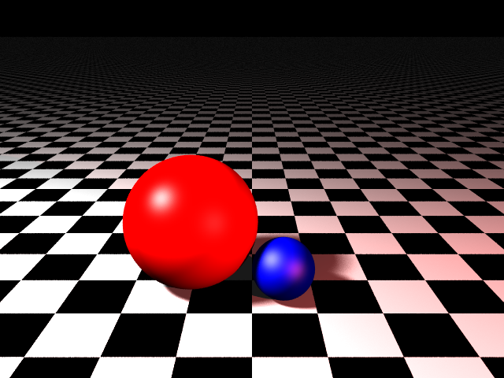
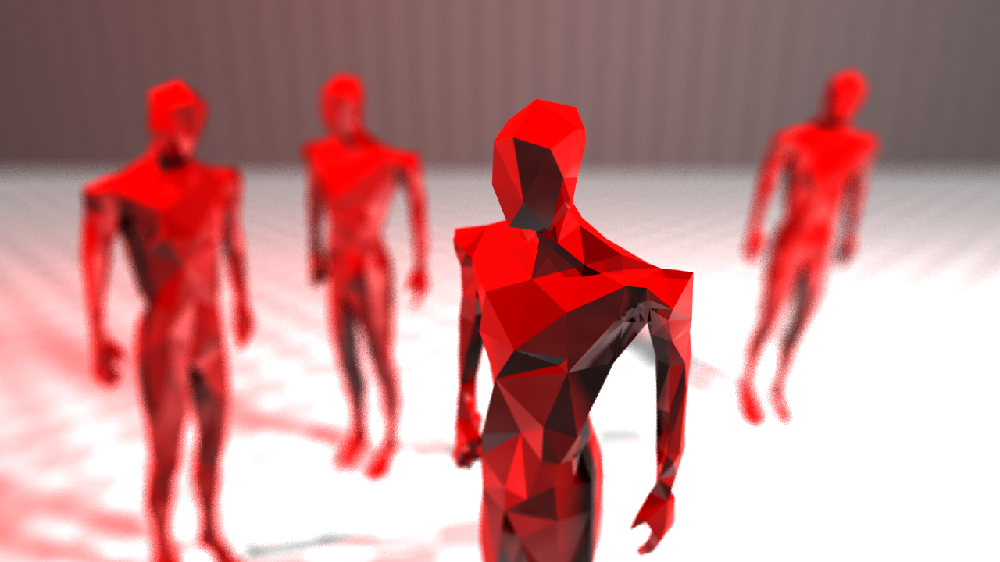

A custom ray tracer, built in Python and OpenGL
A renderer that supports arbitrary mesh geometry with sphere, triangle-mesh, and AABB intersection. The
ray tracer also contains a full lighting/shading pipeline with shadow rays, lights with quadratic attenuation,
and anti-aliasing via camera jitter. The project also includes a JSON parser for easy scene creation.
Private GitHub repository, available upon request.
Four effects added to the the base renderer
 IMAGE / VIDEO
IMAGE / VIDEO
Recursive reflection
Reflects the ray hitting a reflective surface and shades the object using whatever the reflected ray hits. This is applied recursively across a set number of bounces.
 IMAGE / VIDEO
IMAGE / VIDEO
Refraction
Applies Snell's law with a constant index of refraction (η = 1.0 / 1.7) to bend rays through refractive surfaces, distorting what sits behind them. In the sample image, the main sphere has a blue sphere behind it that is being flipped as a result of the refraction.

IMAGE / VIDEOArea lights & soft shadows
Samples different points across a square frame, treating each sample as a unique point light with its own position. The different light contributions are averaged with the total number of samples to create a soft lighting effect.
 IMAGE / VIDEO
IMAGE / VIDEO
Depth of field blur
Samples random points on a unit circle, emitting rays from those random points towards a focal point. The rays converge on the focal point (where the image is clearest) and diverge elsewhere, so that unfocused areas appear blurry.
Every effect above combined in a single SUPER HOT–inspired scene.

IMAGE / VIDEO